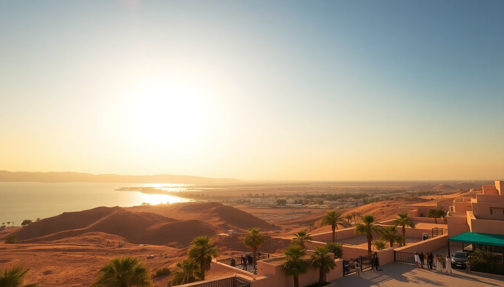

Where to Stay in Hurghada: Best Areas for Every Budget

I landed in Hurghada expecting a single strip of beach resorts. What I found was a sprawling city with five distinct zones, each with a totally different vibe and price point. After a week bouncing between neighborhoods and talking to other travelers, here’s the real breakdown of where to put your head down — no fluff, just what each area actually feels like on the ground.
What’s the difference between Al Dahar and the tourist strips?
Al Dahar is the old downtown — chaotic, dusty, and absolutely alive. We spent an afternoon here and it felt like the real Egypt: vegetable carts blocking traffic, tea stalls on every corner, and the smell of grilled corn drifting from street vendors. It’s where locals live and shop, not where tourists usually sleep.
The tourist strips — Sheraton Road and Village Road — are purpose-built for visitors. Sheraton Road runs parallel to the coastline, packed with mid-range hotels, dive shops, and shisha bars. Village Road is a pedestrian-friendly lane behind it, lined with cafes and souvenir stalls. We grabbed a cheap falafel wrap at El Halaka on Village Road for 15 EGP, and it was better than any resort meal I had all week.
- Al Dahar: Best for budget backpackers who want local markets and cheap eats. Expect noise, dust, and character.
- Sheraton Road: Mid-range sweet spot. Walkable to the marina and dozens of restaurants like Starfish Restaurant for fresh seafood.
- Village Road: Quieter, more relaxed. Good for couples who want a short walk to the beach without the resort markup.
Is staying in a resort area like Makadi Bay worth the premium?
Yes, if your goal is to not leave the property for a week. Makadi Bay is about 30 minutes south of central Hurghada, a cluster of all-inclusive resorts that feel like their own sealed-off worlds. We visited Makadi Water World for a day pass — 25 slides and zero queues on a Tuesday — but I wouldn’t stay here unless you’re a family with kids who need constant entertainment.
The trade-off is isolation. You’re not walking to a restaurant off-property; you’re paying resort prices for everything. A taxi into town runs about 200 EGP one way (roughly $6.50), so factor that in if you plan to explore.
- Pros: Quieter beaches, better snorkeling right off the shore, all-inclusive deals that actually save money if you drink.
- Cons: Stuck on-site, limited food variety, feels like a gated compound rather than Egypt.
- Best resort we saw: Jaz Makadi Star — solid buffet, decent house reef, and a pool that doesn’t close at sunset.
What about El Gouna — is it really that different?
El Gouna is not Hurghada. It’s a private town 25 kilometers north, built by a developer with canals, golf courses, and pastel-colored villas. I rolled my eyes at the concept until I actually biked around it — the lagoon views are legit, and the wind makes it a kitesurfing mecca.
We stayed three nights at Marina Lodge in downtown El Gouna. It’s pricier than Hurghada (expect $80–120/night for a decent room), but the town has actual walkability. You can grab coffee at Bikini Coffee, paddleboard on the lagoon, then eat at The Smokery for grilled fish that cost half of what you’d pay in a Hurghada resort. If you’re a digital nomad or a couple who wants a clean, curated experience, El Gouna wins.
- Budget option: Bella Vista Resort — basic but clean rooms, close to the marina.
- Splurge: Mövenpick Resort El Gouna — overwater bungalows that actually feel worth it.
- Catch: No real local culture. It’s a bubble. Fine for a few days, but I wouldn’t base a whole trip here.
Which area has the best access to diving and snorkeling?
Hands down, the stretch from Sheraton Road to the Hurghada Marina. The marina is where liveaboard boats and day-trip dive centers operate from. We booked a two-tank dive with Emperor Divers for $65, including gear and lunch — they picked us up from our hotel on Sheraton Road at 7:30 AM.
If you want to snorkel without a boat, Makadi Bay has a decent house reef at Makadi Bay Resort, but the best shore snorkeling we found was at Sahl Hasheesh, another resort area 20 minutes south. The beach there is public (legally, all Egyptian beaches are public up to the high-tide line), but resorts will chase you off loungers. We walked the shoreline near Titanic Beach and saw parrotfish and moray eels within 20 feet of the sand.
- Marina area: Best for booking day trips. Restaurants like El Dente for pasta after a dive.
- Sahl Hasheesh: Quieter, better reef, fewer crowds. Stay at The Desert Rose for a mid-range option with direct beach access.
- Pro tip: Don’t book a hotel in Al Dahar if diving is your main goal — you’ll waste time and taxi money commuting.
What’s the best neighborhood for nightlife and eating out?
The Marina Boulevard and Sheraton Road corridor is where things happen after dark. We hit Papas Beach Bar on a Thursday night — live music, hookah, and a crowd that’s 70% tourists and 30% expats. Drinks are expensive by Egyptian standards (a beer runs 60–80 EGP), but the vibe is lively without being trashy.
For food, skip the hotel buffets. Sofra Restaurant on Sheraton Road does Egyptian home cooking — we had koshari and stuffed pigeon for under $10 total. Felfela on Village Road is a reliable falafel spot that’s open until 2 AM.
- Best bar: Little Buddha — overpriced cocktails but the terrace overlooks the marina.
- Best cheap eats: El Dar Darak in Al Dahar — a hole-in-the-wall with the best ful medames I’ve ever had.
- Warning: Tourist traps exist on Sheraton Road. Any place with a guy waving a menu in your face is usually mediocre.
FAQ
Is Hurghada safe for solo female travelers? Yes, with normal precautions. We met several solo women at our hostel who felt fine walking Sheraton Road and Village Road during the day. At night, stick to well-lit areas and use Uber or Careem (both work in Hurghada) instead of street taxis. Harassment is lower than in Cairo, but you’ll still get persistent offers for “cheap papyrus” from shop owners.
How much should I budget for accommodation per night? Budget hostels in Al Dahar start at $10–15 per night. Mid-range hotels on Sheraton Road run $30–60. Resort stays in Makadi Bay or El Gouna cost $60–150. We paid $45/night at Panorama Bungalows Resort on Sheraton Road — clean room, decent pool, and a 10-minute walk to the marina.
When is the best time to visit Hurghada for diving? April to June and September to November are ideal. Water temps sit around 24–28°C, visibility is 20–30 meters, and crowds are thin. We went in late October and had the reef at Giftun Island almost to ourselves. July and August are scorching (40°C+) and the resorts jack up prices.
Conclusion
- Al Dahar for budget travelers who want local life — expect noise, cheap eats, and no frills.
- Sheraton Road for the best balance of price, walkability, and dive access — our top pick for most visitors.
- Makadi Bay and Sahl Hasheesh for families or anyone who wants a resort bubble with good snorkeling.
- El Gouna for a curated, clean experience — ideal for couples or remote workers who don’t mind paying more.
- Avoid booking anything without reading recent reviews about construction noise — several hotels on Village Road are building new wings right now.